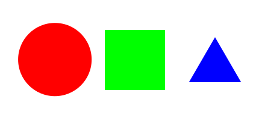

Mapa de imágenes
Se realiza con la tiqueta html <map>.
En el ejemplo definimos tres áreas: un rectángulo, un círculo y un polígono (en nuestro caso un triángulo) con sus respectivos enlaces.
El círculo se mapea con las coordenadas del centro del círculo y el tamaño del radio.
El rectángulo se mapea con 2 coordenadas: la de la esquina superior izquierda y la de la esquina inferior derecha.
El polígono se mapea con cada una de las coordenadas que lo forman.
Las coordenadas tienen todas un punto X y un punto Y.
Ahora vamos a practicarlo con esta imagen:

El código escrito es:
<img src= "mapai.svg" alt="ejemplo mapa imagen" usemap="#mapa">
<map name="mapa">
<area href="https://es.wikipedia.org/wiki/Rojo" shape="circle" coords="91.188, 99.135, 60" target=target="_blank">
<area href="https://es.wikipedia.org/wiki/Verde" shape="rect" coords="174 ,50, 274,150" target="_blank">
<area href="https://es.wikipedia.org/wiki/Azul" shape="poly" coords="313.7,137, 357,62, 400.3,137" target="_blank">
</map>
El resultado de nuestra imagen mapeada es: